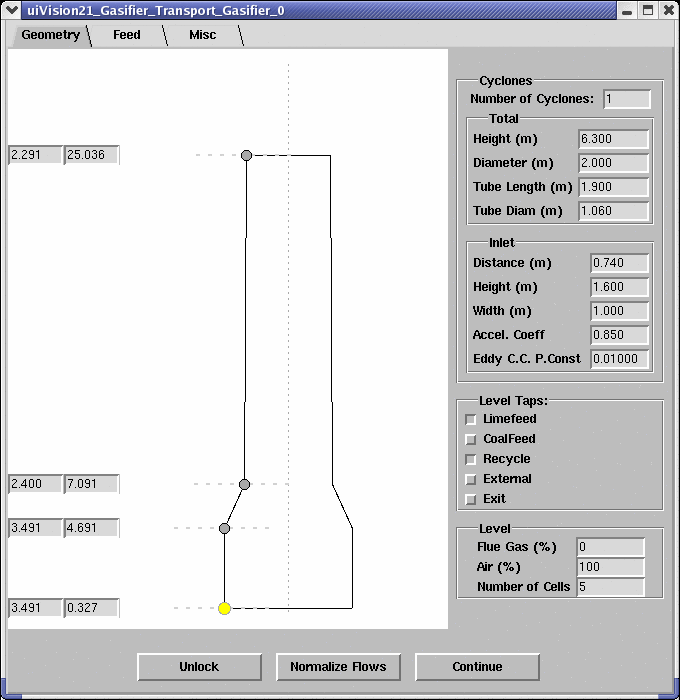
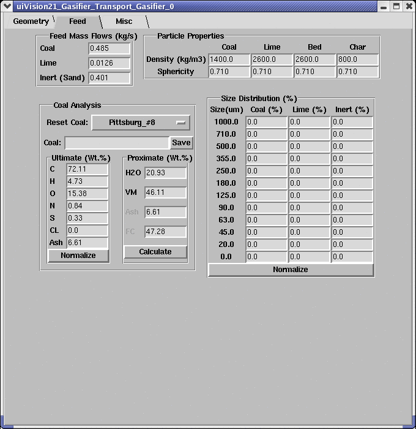
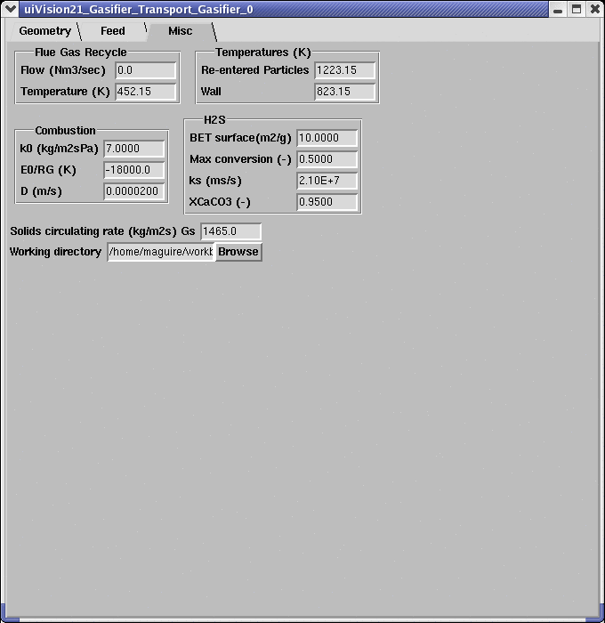

|  | The Transport Gasifier Module's graphical User Interface is divided into three folders. In the Geometry interface, the riser geometry of the gasifier can be specified by dragging a currently selected point after pressing the Lock icon (changing to Unlock). Number of cyclones and cycone geometry can also be specified by entering data in the spaces on the right hand side of the window. Inlet locations of coal feed and limestone feed should also be provided here. Location of returning streams from the return leg and external heat exchangers are also specified. Riser exit location should be given here. Recycled flue gas can be specified as a percentage of recycle flue gas flow rate and air flow rate. Icon Normalize Flows is used to normalize recycled flue gas and air flow rates so that the sum of the two streams is unity. Number of computational cells between a currently selected point and a point above the selected point can be specified here. It is recommended that uniform cell sizes are used along the riser. |
|  |
In the Feed interface, feed rates of coal, limestone and inert particles, such as sand, are specified. Particle density, sphericity and size distribution for different materials are given here. Coal ultimate and proximate analyses are provided in this interface. |
|
In the Misc interface, flow rate and temperature of recycled flue gas are specified. Re-entered particle temperature and riser wall temperature are also given here. Coal combustion and limestone-H2S reaction kinetics are required and should be provided here; default values can be used. Solids circulation rate in the riser is important in the model and is used to calculate pressure drop in the riser and should be provided here as one of the operating conditions. |
 |
nothing here yet